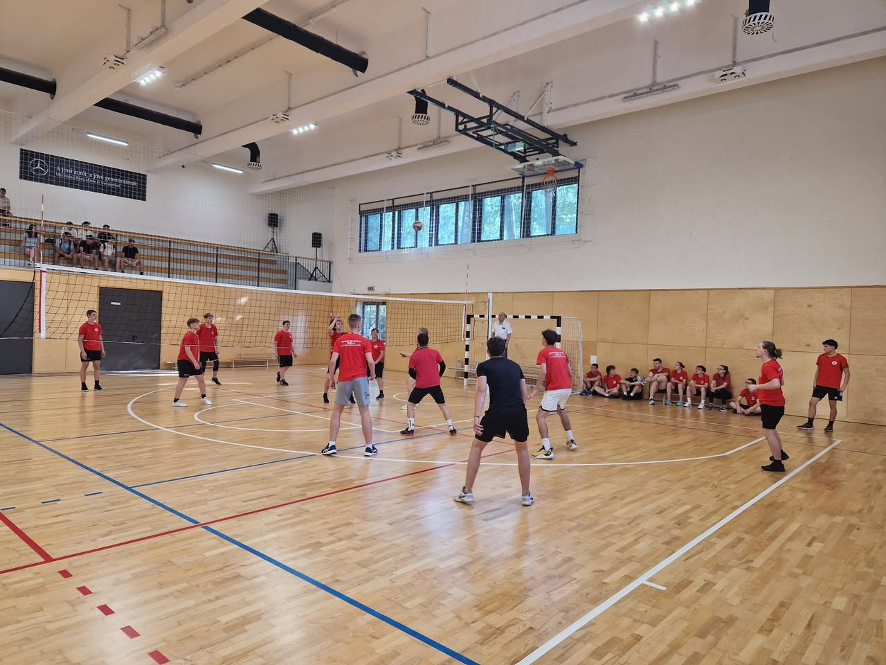
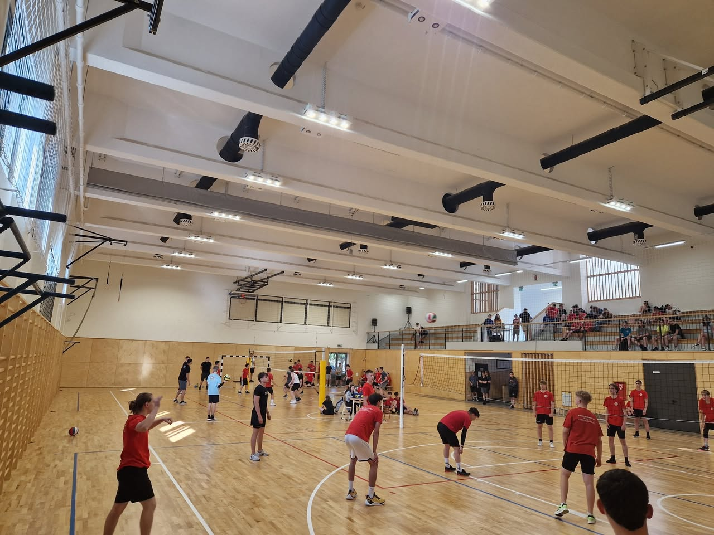
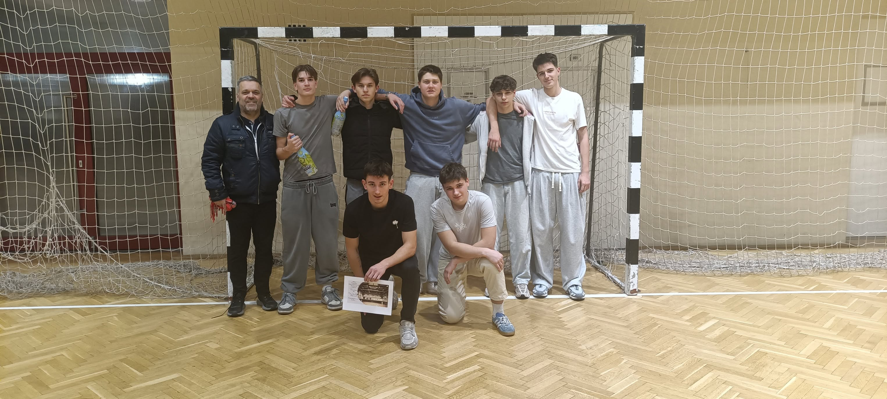
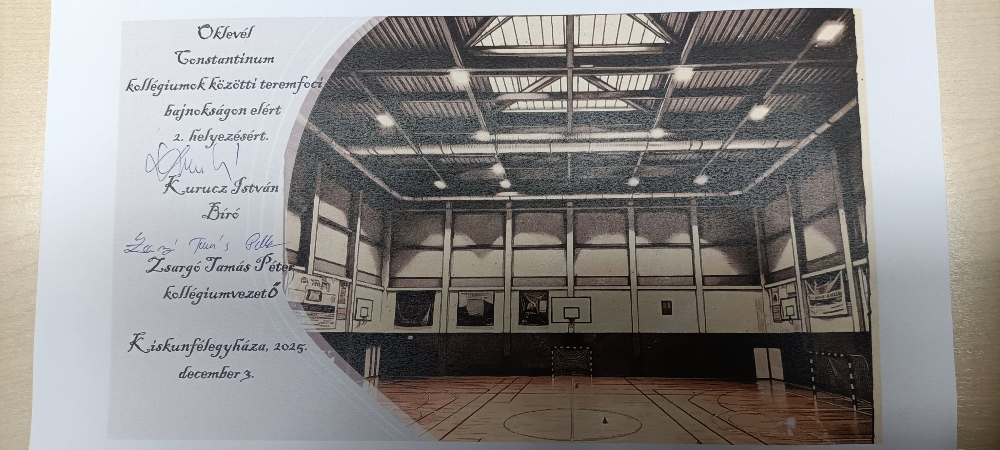
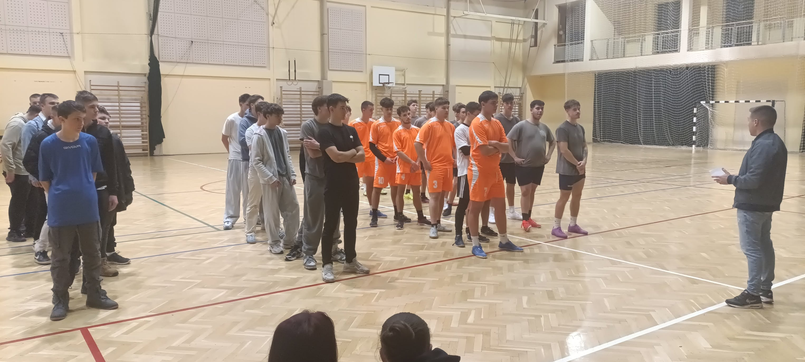
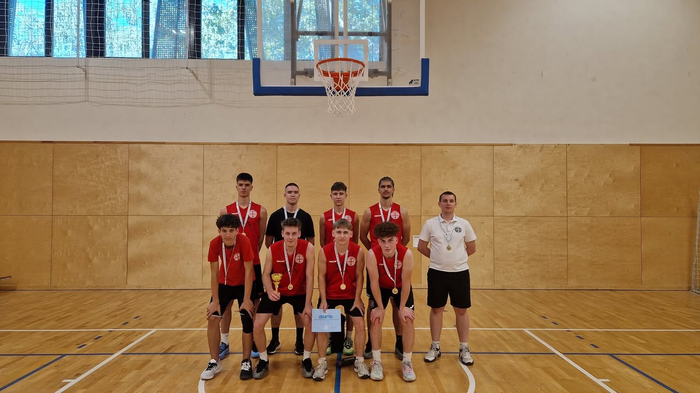
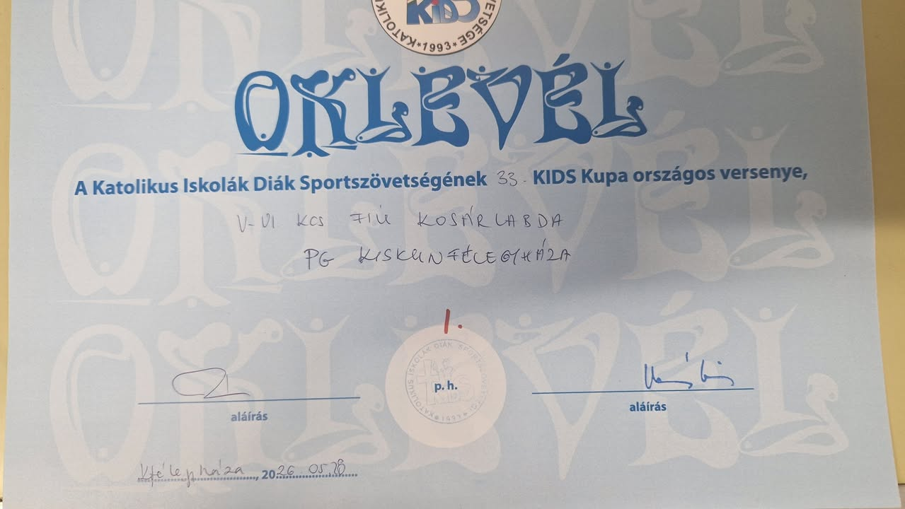

Kecskeméten rendezték meg a Diákolimpia Ügyességi Csapatbajnokság megyei döntőjét, ahol iskolánk súlylökőcsapata I. helyezést ért el.
A csapat tagjai: Czimer Benjamin, Földes Máté, Kis Roland, Lovas Levente, Máriás Zalán, Tajti Roland.
Felkészítő tanár: Preiszné Bene Mónika
A tanév zárásaként első alkalommal rendeztük meg iskolánkban az osztályok közötti röplabda bajnokságot, amire nagyon nagy volt az érdeklődés. Összesen 12 osztály jelentkezett.
A bajnokság végső sorrendje:
1 hely: 11.D
2.hely: 9/Knyd
3.hely: 10.D.
Külön kiemelendő, hogy a 9/Knyd osztályban 3 lány is játszott! Gratulálunk!


Idén hatodik alkalommal rendezték meg a "Constantinum kollégiumok közötti teremfoci bajnokságot" december 3-án a Constantinum Sportcsarnokában.
A város 4 kollégiumának csapata körmérkőzéses formában mérette meg erejét és foci tudását. A Szent Benedek PG kollégiumának csapata az előkelő 2. helyezést szerezte meg.
A csapat tagjai: Rózsavölgyi Ferenc 11.B (kapus), Varga Tibor 10.A ( csapatkapitány), Szabó Marcell 10.A, Antal József 12.B, Bánov Alex 9/Knya, Bobek Bálint 9/Knyc, Héra Olivér Waldorf.
Gratulálunk a fiúknak!



Iskolánk adott helyet a KIDS kupa kosárlabda V-VI. korcsoport küzdelmeinek 2026. május 25-én. A színvonalas tornán iskolánk csapata I. helyezést ért el!
Szívből gratulálunk!

